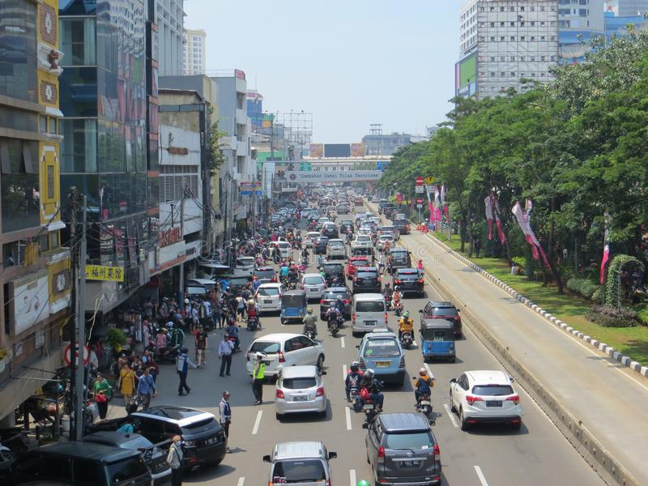
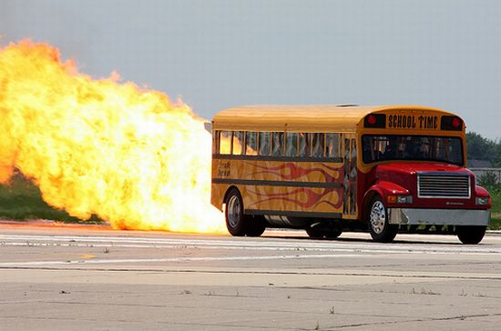
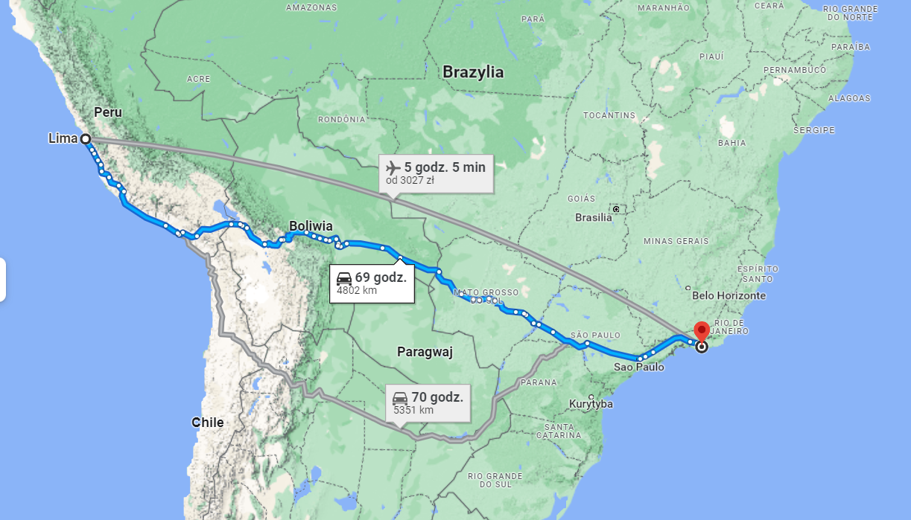

Strona główna
3 Ciekawostki o autobusach
1. Miasto z największą ilością autobusów to Dżakarta w Indonezji. Ma łącznie 251,2 km (156 mil) linii autobusowych, obsługiwanych przez 3900 autobusów!

2. Jaki jest rekord prędkości autobusu? Paul Stender, maniak motoryzacyjny z USA, oraz jego zespół inżynierów zmodyfikowali typowy żółty amerykański autobus szkolny i zainstalowali w nim silnik odrzutowy GE J-79 z samolotu McDonnell Douglas F4 Phantom II. Tak przekonstruowany pojazd osiągnął najwyższą prędkość, jaką kiedykolwiek zarejestrował autobus – oszałamiające 590 km/h (367 mph).

3. Jaka jest najdłuższa trasa autobusu? Obecnie najdłuższa czynna trasa autobusowa na świecie przebiega pomiędzy Limą w Peru a Rio de Janeiro w Brazylii. Nazwana Transoceánicą lub Autostradą Międzyoceaniczną, ma 2600 km (1615 mil) długości, a jej pokonanie zajmuje ponad 100 godzin.
